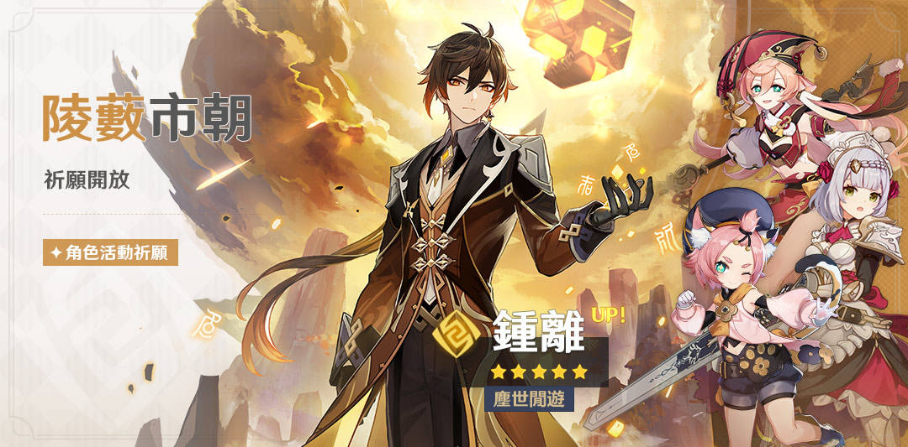

導能原盤·緒論
2021/04/30 10:00 ~2021/05/17 03:59
導能原盤·緒論
「導能原盤·緒論」活動即將開啟！ 須彌的學者胡塞尼請你幫助他收集珍貴的研究材料——「地脈之果碎片」，並將神秘的遠古遺物「導能原盤」暫時交給了你。請幫助胡塞尼收集「地脈之果碎片」，並借助「導能原盤」發揮它們的力量吧。 此外，「繞塵紀行」中也增加了對應的活動任務，完成後可領取紀行經驗。 〓活動時間〓 玩法開啟時間：2021/04/30 10:00 ~2021/05/17 03:59 (伺服器時間) 活動商店開啟時間：2021/04/30 10:00~2021/05/24 03:59 (伺服器時間) 〓參與條件〓 冒險等階≥20級 https://www.hoyolab.com/genshin/article_pre/1276
「陵藪市朝」祈願：「塵世閒遊·鍾離(岩)」機率UP！
1.5版本更新後 ~ 2021-05-18 17:59:00
●活動期間，限定五星角色「塵世閒游·鍾離(岩)」的祈願抽取機率將大幅提升！ ●活動期間，四星角色「智明無邪·煙緋(火)」「未授勳之花·諾艾爾(岩)」「貓尾特調·迪奧娜(冰)」的祈願抽取機率將大幅提升！ ●活動結束後，四星角色「智明無邪·煙緋(火)」將在1.6版本進入「奔行世間」常駐祈願。 ※ 以上角色中，限定角色不會進入「奔行世間」常駐祈願。
祈願開啟期間，還將開啟相應的「且試身手」角色試用活動，旅行者可以使用包含試用角色的固定陣容進入指定的關卡進行體驗，挑戰成功後即可獲得對應獎勵！